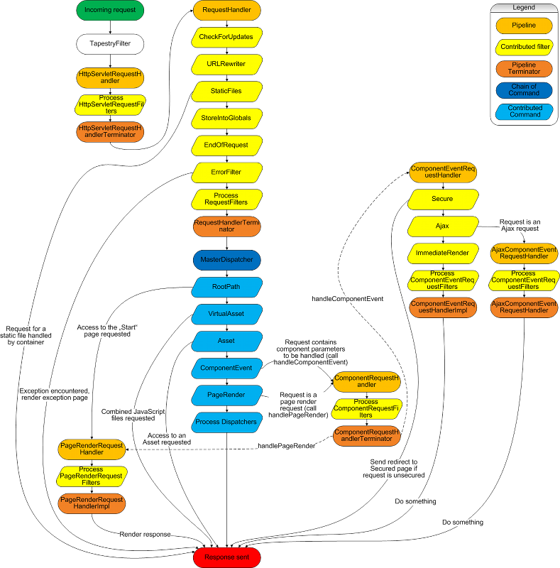

Request Processing
Request Processing involves a sequence of steps that Tapestry performs when every HTTP request comes in. You don’t need to know these steps to use Tapestry productively, but understanding the request processing mechanism is helpful if you want to understand Tapestry deeply.
The Overview diagram below illustrates the interaction between various pipelines and dispatchers in processing an incoming request. A detailed description of each part is provided below.

Tapestry Filter
All incoming requests originate with the TapestryFilter, which is a servlet filter configured inside your application’s web.xml.
The TapestryFilter is responsible for a number of startup and initialization functions.
When it receives a request, the TapestryFilter obtains the HttpServletRequestHandler service, and invokes its service() method.
HttpServletRequestHandler Pipeline
This pipeline performs initial processing of the request.
It can be extended by contributing a HttpServletRequestFilter into the HttpServletRequestHandler service’s configuration.
Tapestry does not contribute any filters into this pipeline of its own.
The terminator for the pipeline does two things:
-
It stores the request and response into the
RequestGlobalsservice. This is a per-thread scoped service that stores per-thread/per-request information. -
It wraps the request and response as a
RequestandResponse, and passes them into theRequestHandlerpipeline.
RequestHandler Pipeline
This pipeline is where most extensions related to requests take place.
Request represents an abstraction on top of HttpServletRequest.
Primarily, this exists to bridge from the Servlet API objects to the corresponding Tapestry objects.
This is to allow for a possible portlet integration for Tapestry.
Where other code and services within Tapestry require access to information in the request, such as query parameters, that information is obtained from the Request (or Response) objects.
The RequestHandler pipeline includes a number of built-in filters:
-
CheckForUpdatesis responsible for class and template reloading. -
Localizationidentifies the locale for the user. -
StaticFileschecks for URLs that are for static files (files that exist inside the web context) and aborts the request, so that the servlet container can handle the request normally. -
ErrorFiltercatches uncaught exceptions from the lower levels of Tapestry and presents the exception report page. This involves theRequestExceptionHandlerservice, which is responsible for initializing and rendering thecore/ExceptionReportpage.
The terminator for this pipeline stores the Request and the Response into RequestGlobals, then requests that the Master Dispatcher service figure out how to handle the request (if it is, indeed, a Tapestry request).
Master Dispatcher Service
The MasterDispatcher service is a chain-of-command, aggregating together (in a specific order), several Dispatcher objects.
Each Dispatcher is built to recognize and process a particular kind of URL.
The dispatchers below are not present if you’re using tapestry-http without tapestry-core.
|
RootPath Dispatcher
The RootPath Dispatcher recognizes a request for the application root (i.e., /) and handles this the same as a render request for the Start`page. (Support for the `Start page is kept for legacy purposes. Index pages are the correct approach.)
Asset Dispatcher
Requests that begin with /assets/ are references to asset resources that are stored on the classpath, inside the Tapestry JARs (or perhaps inside the JAR for a component library).
The contents of the file will be delivered to the client browser as a byte stream.
This dispatcher also handles requests that are simply polling for a change to the file.
PageRender Dispatcher
Page render requests are requests to render a particular page. Such requests may include additional elements on the path, which will be treated as activation context (see ComponentEvent Dispatcher below). Generally speaking, the activation context is the primary key of some related entity object. This allows the page to reconstruct the state it will need to successfully render itself.
The event handler method for the activate event may return a value; this is treated the same as the return value from a component action request; typically this will result in a redirect to another page. In this way, the activate event can perform simple validation at the page level ("can the user see this page?").
Page render URLs consist of the logical name of the page plus additional path elements for the activation context.
The dispatcher here strips terms off of the path until it finds a known page name. Thus, /mypage/27 would look first for a page whose name was mypage/27, then look for a page name mypage.
Assuming the second search was successful, the page would be activated with the context 27.
If no logical page name can be identified, control passes to the next dispatcher.
ComponentEvent Dispatcher
The ComponentEvent dispatcher is used to trigger events in components.
The URL identifies the name of the page, then a series of component ids (the path from the page down to the specific component), then the name of the event to be triggered on the component.
The remaining path elements are used as the context for the event (not for the page activation, which does not currently apply).
For example, /griddemo.FOO.BAR/3 would locate page griddemo, then component FOO.BAR, and trigger an event named action (the default event type, which is omitted from the URL), with the context 3.
If the page in question has an activation context, it is supplied as an additional query parameter on the link.
In cases where the event type is not the default, action, it will appear between the nested component id and the event context, preceded by a colon.
Example: /example/foo.bar:magic/99 would trigger an event of type magic.
This is not common in the vanilla Tapestry framework, but will likely be more common as Ajax features (which would not use the normal request logic) are implemented.
The response from a component action request is typically, but not universally, used to send a redirect to the client; the redirect URL is a page render URL to display the response to the event. This is detailed under Page Navigation.
RequestGlobals Service
The RequestGlobals service has a life cycle of per-thread.
This means that a separate instance exists for every thread, and therefore, for every request.
The terminators of the two handler pipelines store the request/response pairs into the RequestGlobals service.
Request Service
The Request service is a shadow of the RequestGlobals services' request property.
That is, any methods invoked on this service are delegated to the request object stored inside the RequestGlobals.